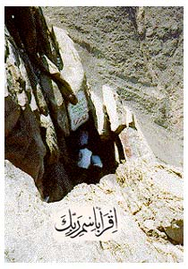

Viimeinen profeetta
Muhammed (SAAS), Jumalan sanansaattaja koko ihmiskunnalle, on viimeinen profeetta. Hän syntyi Mekassa Arabian niemimaalla kylässä, jonka nimi oli Quraish. Hänen isänsä nimi oli Abdulla ibn Abdel Muttalib ja äitinsä Amina bint Wahhab. Isä kuoli ennen hänen syntymäänsä ja äitikin kuoli hänen ollessaan kuusivuotias. Muhammedista (SAAS) otti huolehtiakseen hänen isoisänsä ja tämän kuoltua hän muutti asumaan setänsä Abu Talibin luo. Hän varttui orpona eikä oppinut lukemaan tai kirjoittamaan.
Muhammedin isän, Abdullahin, tarina on kuin Ismaelin. Hänen isänsä Abdel Muttalib yritti erään kerran noutaa vettä Zamzam-lähteestä, kahden mekkalaisille kuuluneen epäjumalanpatsaan väliltä. Mekan väki ei tahtonut antaa hänen hakea vettä sieltä. Silloin hänellä oli vain yksi poika, jonka nimi oli El Haris, ja hän ajatteli, että jos hänellä olisi useampia lapsia, hänestä tulisi mahtavampi ja he eivät enää voisi pysäyttää häntä. Hän antoi Jumalalle lupauksen, että jos hän saisi kymmenen lasta, uhraisi hän yhden heistä Jumalalle.
Vuosia myöhemmin Abdel Muttalibilla oli kymmenen lasta ja kymmenes heistä oli Muhammedin isä, Abdulla. Niin tuli päivä, jolloin Abdel Muttalibin oli määrä täyttää lupauksensa. Se oli vaikea päivä hänelle. Ystävälliset ihmiset sanoivat hänelle, että hänen tulisi kysyä viisaalta mieheltä neuvoa, voisiko hän teurastaa kameleja sen sijaan, että uhraisi lapsensa. Viisas mies heitti arpaa Abdullahista ja kymmenestä kamelista, mutta arpa lankesi Abdullahille. Hän jatkoi arpomista nostaen samalla panosta, kunnes Abdullahia vastaan oli sata kamelia. Vasta silloin arpa lankesi kameleille ja koko kaupunki iloitsi. He pitivät juhlat ja alkoivat samana päivänä suunnitella Abdullahin naittamista. Hänet ja Amina kihlattiin ja häät pidettiin vain muutaman päivän päästä. Vähän myöhemmin Abdullah matkusti kauppamatkalle, mutta sairastui ja kuoli matkan aikana. Amina oli silloin raskaana ja aikanaan synnytti pojan. Tämän ollessa 6-vuotias hänkin kuoli.
Muhammed (SAAS) kasvoi isoisänsä kodissa, kunnes siirtyi setänsä Abu Talibin hoiviin. Hän meni naimisiin 25-vuotiaana rikkaan Khadija-nimisen naisen kanssa, rauha hänelle. Khadija oli kuullut, kuinka luotettava, rehellinen, vilpitön ja kunniallinen hän oli. Hän pyysi miestä hoitamaan hänen liikeasioitaan matkojensa aikana, ja palattuaan huomasi hänen suoriutuneen tehtävistään erittäin hyvin. Kaikki, jotka tekivät työtä Khadijalle, puhuivat hyvää Muhammedista (SAAS), kertoen kuinka hyvin hän oli toiminut. Hän kysyi mieheltä, haluaisiko tämä mennä naimisiin hänen kanssaan. Khadija oli häntä monta vuotta vanhempi, ja häntä pidetään ensimmäisenä musliminaisena. Hän oli suureksi lohduksi Muhammedille (SAAS) vaikeina aikoina ja tuki tätä lojaalina ja vankkumattomana antaen sekä aikaansa että rahojaan silloin, kun kaikki olivat tätä vastaan, ja hänestä oli paljon apua Islamin alkuaikoina. Khadija oli kaikkien Muhammedin (SAAS) lasten äiti, paitsi yhden, jonka äidin nimi oli Maria. Kaikki lapset kuolivat hänen elinaikanaan, paitsi tytär Fatima, joka avioitui serkkunsa Ali ibn Abu Talibin kanssa. Ali on ensimmäinen poika, joka uskoi Islamiin eikä hän koskaan menettänyt uskoaan. Hänet kasvatettiin muslimiksi ja hänestä tuli neljäs kalifi.
Muhammedin (SAAS) lähin ystävä oli Abu Bakr El Sadiq. Hän uskoi aina Muhammediin (SAAS) ja oli hänelle lojaali. Hän oli ensimmäinen aikuinen mies, joka uskoi Muhammedin (SAAS) sanomaan, ja hänestä tuli ensimmäinen kalifi. Hänen jälkeensä tulivat Omar ibn El Khattab ja Osman ibn Afan, ja sitten Ali. Muhammed (SAAS) sai ensimmäisen ilmestyksensä 40-vuotiaana Hiran luolassa (ks. kuva) Noor-vuorilla Mekassa. Ensimmäinen hänen saamansa jae on nimeltään "Iqra"; "Lue!". Silloin enkeli Gabriel, rauha hänelle, otti Muhammedin (SAAS) syleilyynsä ja sanoi hänelle:
"Lue julki Herrasi nimeen, joka on luonut, luonut ihmisen hyytyneestä verestä. Lue! Sillä Herrasi on ylevin; Hän joka on opettanut käyttämään kynää, opettanut ihmiselle sen, mistä tämä ei ennen tiennyt."
Mekkalaiset kutsuivat Muhammedia (SAAS) nimellä El Amin (luotettava) ja El Sadiq (totuudellinen). Hän ei koskaan ollut mukana ihmisten juodessa tai juhliessa, eikä hän koskaan kumartavat senaikaisten jumalankuvien edessä. Mutta pian sen jälkeen, kun hän oli ruvennut saamaan ilmestyksiään, kansa alkoi kääntyä häntä vastaan. Hän toi tietoa epäilyttävästä uskonnosta, jonka mukaan kaikki, köyhät ja rikkaat, olivat samanarvoisia Jumalan edessä ja epäjumalanpalvonta oli kiellettyä. Tuohon aikaan Kaaba oli täynnä noita epäjumalan patsaita, ja ihmisiä tuli läheltä ja kaukaa niitä katsomaan. Muhammed saarnasi uskontoa, joka kielsi koron ottamisen ja orjuutuksen, ja kaikki Mekan rikkaat ottivat siitä kovasti pahakseen. He yrittivät kaikin tavoin estää uutta uskontoa leviämästä.
Nyt koittivat ankarat ajat Muhammedille (SAAS) ja hänen lähimmilleen. Vain hänen kaikkein läheisimmät ystävänsä pysyivät hänelle uskollisina, ja heitä oli harvassa. Khadija, rauha hänelle, kuoli ja pian sen jälkeen kuoli myös Muhammedin (SAAS) setä ja ystävä. Sitä vuotta kutsutaan surun vuodeksi. Muhammed (SAAS) menetti kaksi tärkeintä tukijaansa. Silloin avautui kuitenkin toinen ovi hänelle. Medinasta tuli Mekkaan ihmisiä, jotka olivat kuulleet puhuttavan Muhammedista (SAAS). He sanoivat, että jos hän tahtoisi tulla heidän luokseen, he tukisivat häntä myötä- ja vastoinkäymisissä. Muhammed (SAAS) nimitti heidät nimellä El Ansar, auttajat. Muhammed (SAAS) muutti Mekasta Medinaan Hijran vuonna 622 j.Kr. Hänen kanssaan muuttaneita muslimeja kutsutaan nimellä Muhajirun, maastamuuttajat. He muuttivat pois suojellakseen uskontoaan Mekan epäuskovilta. Islam levisi kautta koko Arabian niemimaan ja sittemmin koko maailmaan. Muhammed (SAAS) kuoli Medinassa 63 vuoden ikäisenä ja hänet on haudattu sinne.